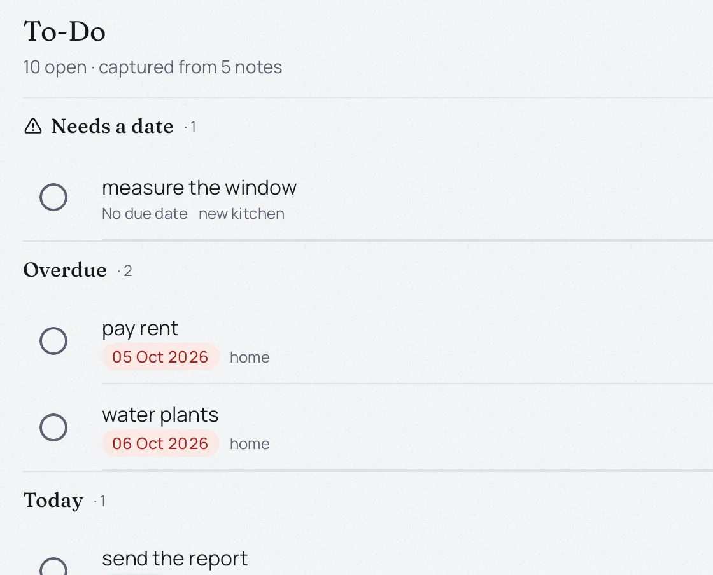
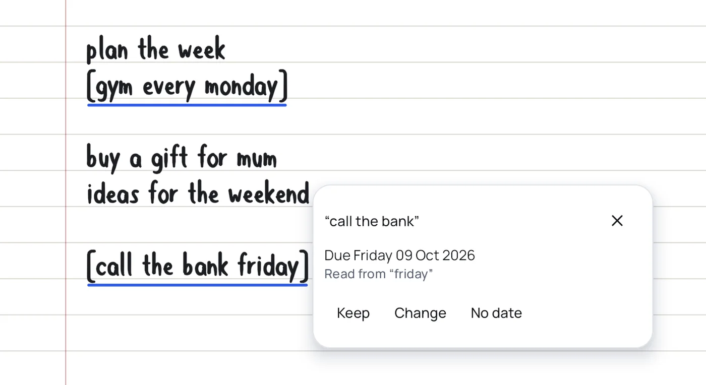
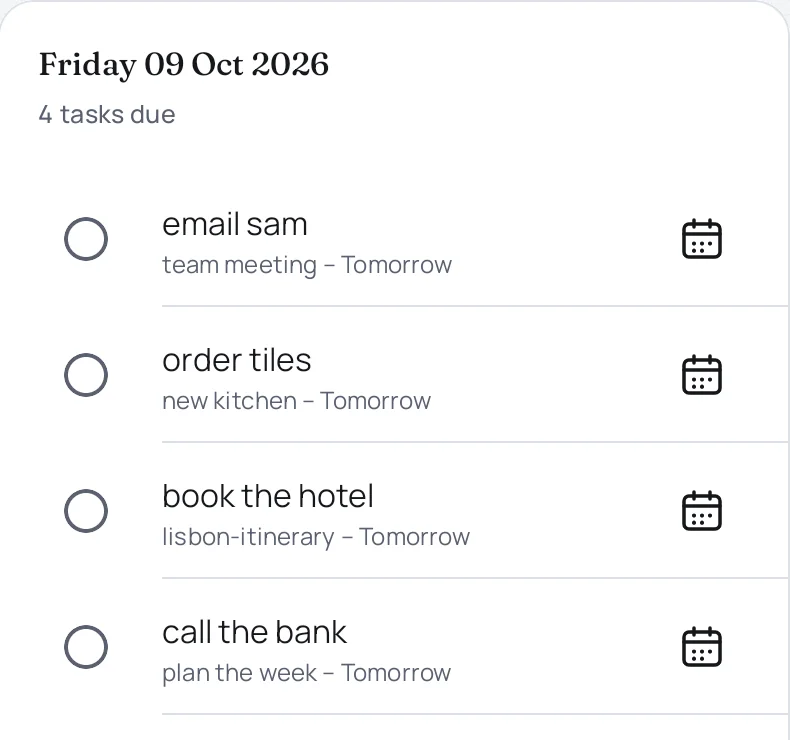
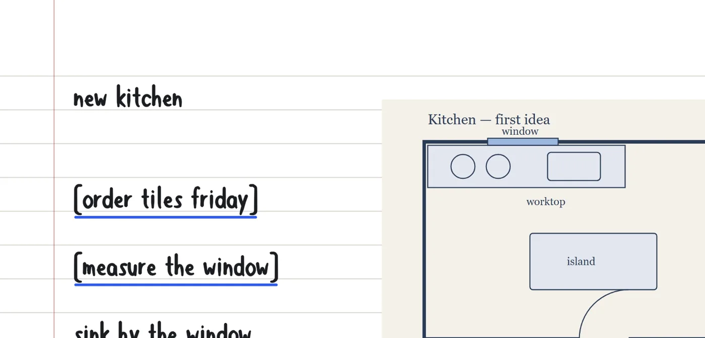
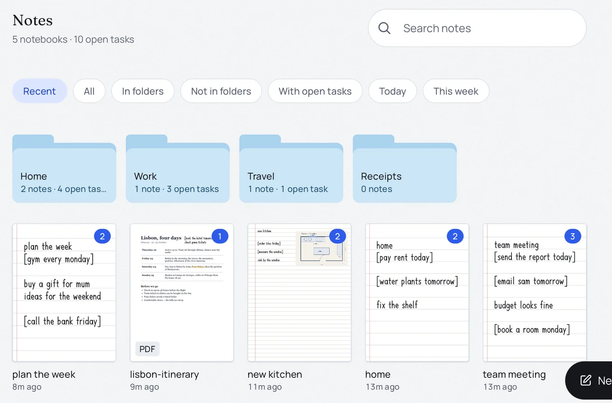

Everything you bracketed, in one place
Every task from every note, sorted into overdue, today and upcoming. Tick one and it's crossed out in your note. Tap one to jump back to where you wrote it.

InkTasks is a handwriting notebook where to-dos write themselves. Take notes as you would on paper, and what you bracket lands in your list, with its date.
Free for the first month. Your notes never leave your device.

Put anything in square brackets and it becomes a task. It reads the date you wrote too: "friday", "tomorrow", "in 3 days", "every monday".
Every task from every note, sorted into overdue, today and upcoming. Tick one and it's crossed out in your note. Tap one to jump back to where you wrote it.

Set a reminder on any task, get a daily summary of what's due, and sync tasks to the calendar you already use.

Pen, marker, highlighter and eraser. Ruled, grid, dotted or blank pages. Add pictures, import a PDF and write on it, export any note as a PDF.

File notes into folders, find them by title, and get a deleted note back within 30 days.

Notes, pictures and PDFs are stored on your tablet. We can't see them.
Your handwriting is read on the tablet itself. It is never sent anywhere.
Save your whole library to a file whenever you like, on the device or in the cloud storage you pick.
Cancel any time in Google Play. Without a subscription you can still read every note and tick tasks off: your notes are never locked away.
Prices vary by country; yours is shown in the app before you subscribe.
Android tablets with a stylus, such as the Samsung Galaxy Tab with S Pen, running Android 10 or newer.
On your tablet only. Use Settings → Backup to save a copy to a file, and restore from that file on a new device.
In the Google Play app: your profile picture → Payments and subscriptions → Subscriptions → InkTasks → Cancel. In InkTasks, Settings → Account opens the same page. You keep access until the end of the period you paid for.
Sign in to InkTasks with the same Google account. If it doesn't unlock, tap Restore purchases on the subscription screen.
Write to support@inktasks.com.